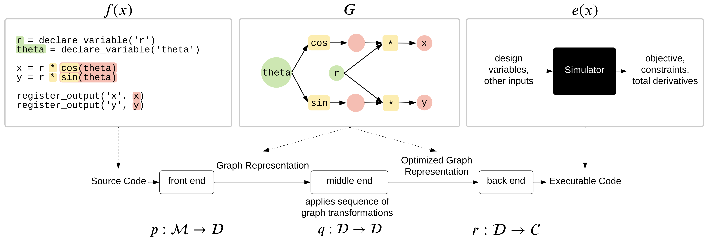
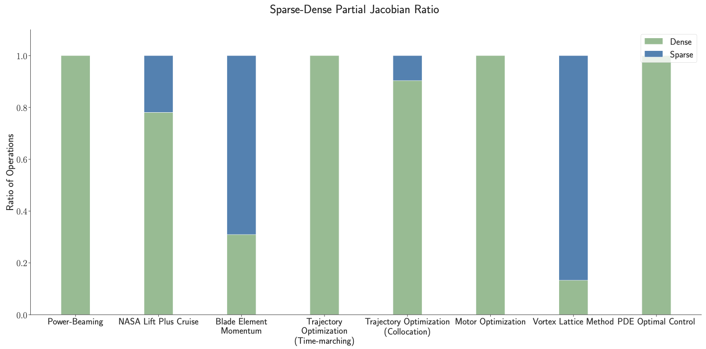
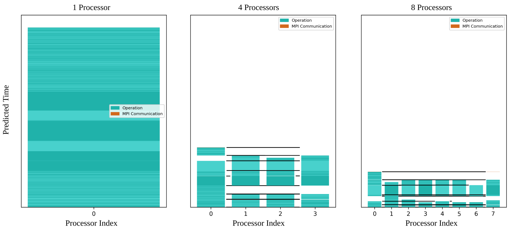
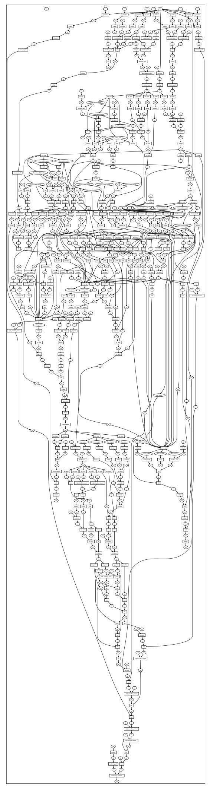
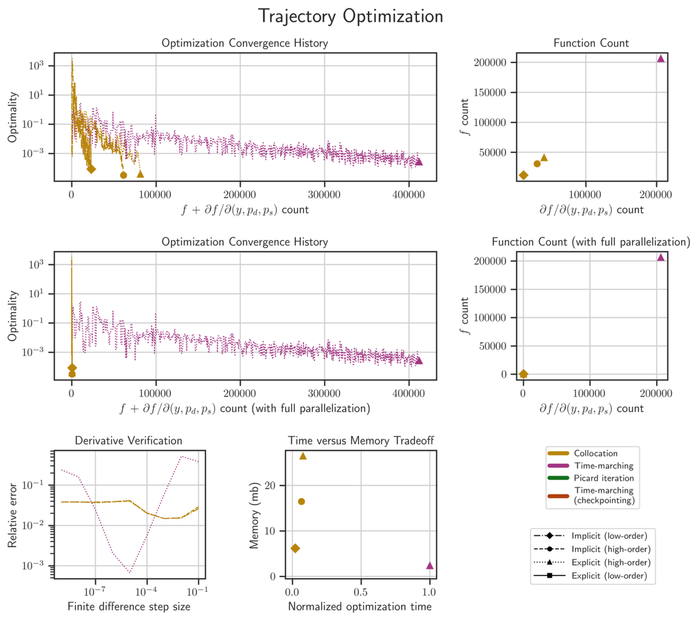
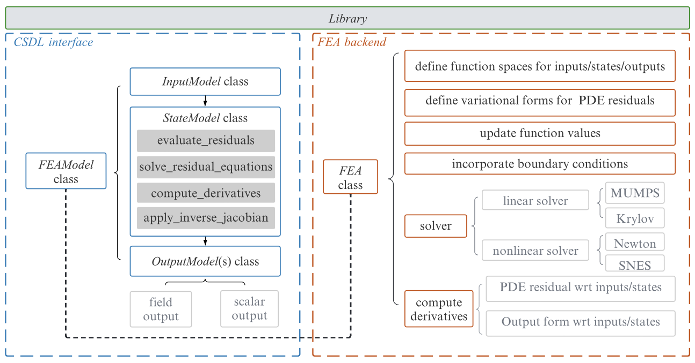

Graph-native modeling for automated adjoint sensitivity analysis
- Context
- Gradient-based multidisciplinary design requires total derivatives through explicit calculations, nonlinear equation solves, and time-dependent models.
- Gap
- Implementing adjoints and coordinating derivative calculations across these models can require substantial application-specific code.
- Research goal
- Generate model evaluations and adjoint sensitivities from a common computational graph, including coupled PDE and ODE models.
Selected studies
ReferencesGenerating model outputs and sensitivities from one description
CSDL records model equations as a graph, transforms that graph, and generates executable evaluations and adjoint sensitivities. Two engineering examples require roughly half the user-written code of their original implementations, with no measurable increase in computation time.
Victor Gandarillas, Anugrah Jo Joshy, Mark Z. Sperry, Alexander K. Ivanov, John T. Hwang. A Graph-Based Methodology for Constructing Computational Models that Automates Adjoint-Based Sensitivity Analysis. Structural and Multidisciplinary Optimization 67.5 (2024), p. 76, 2023.
@article{gandarillas2023graph,
author = {Victor Gandarillas and Anugrah Jo Joshy and Mark Z. Sperry and Alexander K. Ivanov and John T. Hwang},
title = {A Graph-Based Methodology for Constructing Computational Models that Automates Adjoint-Based Sensitivity Analysis},
journal = {Structural and Multidisciplinary Optimization 67.5 (2024), p. 76},
year = {2023},
note = {Metadata verification: Crossref unavailable: HTTPError}
}







Embedding time-dependent dynamics in gradient-based optimization
Ozone computes sensitivities through an ODE solution and the surrounding design model. A common interface supports explicit and implicit Runge–Kutta methods with time-marching, checkpointing, and parallel-in-time approaches, allowing their convergence, runtime, and memory costs to be compared on the same optimization problem.
Mark Z. Sperry, John T. Hwang. Ozone: an open-source ordinary differential equation solver for gradient-based optimization. Optimization and Engineering, 2025.
@article{sperry2025ozone,
author = {Mark Z. Sperry and John T. Hwang},
title = {Ozone: an open-source ordinary differential equation solver for gradient-based optimization},
journal = {Optimization and Engineering},
year = {2025},
volume = {26},
number = {3},
pages = {2145-2183},
doi = {10.1007/s11081-025-09967-y},
url = {https://doi.org/10.1007/s11081-025-09967-y},
note = {Metadata verification: Crossref title}
}


Automating adjoint sensitivities for PDE-based multidisciplinary models
feMo uses FEniCSx to differentiate finite-element residuals and CSDL to combine those derivatives with other disciplines through the adjoint method. Verification problems, electric-motor shape optimization, and an eVTOL wing gust-response analysis demonstrate the coupling of PDE and non-PDE models.
Ru Xiang, Sebastiaan P. C. van Schie, Luca Scotzniovsky, Jiayao Yan, David Kamensky, John T. Hwang. Automating adjoint sensitivity analysis for multidisciplinary models involving partial differential equations. Structural and Multidisciplinary Optimization (in press 2024, per CV), 2024.
@article{xiang2024automating,
author = {Ru Xiang and Sebastiaan P. C. van Schie and Luca Scotzniovsky and Jiayao Yan and David Kamensky and John T. Hwang},
title = {Automating adjoint sensitivity analysis for multidisciplinary models involving partial differential equations},
journal = {Structural and Multidisciplinary Optimization (in press 2024, per CV)},
year = {2024},
doi = {10.21203/rs.3.rs-4265983/v1},
url = {https://doi.org/10.21203/rs.3.rs-4265983/v1},
note = {Metadata verification: Crossref title}
}

References
- Victor Gandarillas, Anugrah Jo Joshy, Mark Z. Sperry, Alexander K. Ivanov, John T. Hwang. A Graph-Based Methodology for Constructing Computational Models that Automates Adjoint-Based Sensitivity Analysis. Structural and Multidisciplinary Optimization 67.5 (2024), p. 76, 2023.PDF
@article{gandarillas2023graph, author = {Victor Gandarillas and Anugrah Jo Joshy and Mark Z. Sperry and Alexander K. Ivanov and John T. Hwang}, title = {A Graph-Based Methodology for Constructing Computational Models that Automates Adjoint-Based Sensitivity Analysis}, journal = {Structural and Multidisciplinary Optimization 67.5 (2024), p. 76}, year = {2023}, note = {Metadata verification: Crossref unavailable: HTTPError} } - Mark Sperry, Kavish Kondap, John T. Hwang. Automatic adjoint sensitivity analysis of models for large-scale multidisciplinary design optimization. AIAA AVIATION 2023 Forum, 2023.DOIPDF
@inproceedings{sperry2023automatic, author = {Mark Sperry and Kavish Kondap and John T. Hwang}, title = {Automatic adjoint sensitivity analysis of models for large-scale multidisciplinary design optimization}, booktitle = {AIAA AVIATION 2023 Forum}, year = {2023}, doi = {10.2514/6.2023-3721}, url = {https://doi.org/10.2514/6.2023-3721}, note = {Metadata verification: Crossref title} } - Mark Sperry, Kavish Kondap, John T. Hwang. Static Task Scheduling for Parallel Execution of Large-Scale Multidisciplinary Design Optimization Models. AIAA SCITECH 2024 Forum, 2024.DOIPDF
@inproceedings{sperry2024static, author = {Mark Sperry and Kavish Kondap and John T. Hwang}, title = {Static Task Scheduling for Parallel Execution of Large-Scale Multidisciplinary Design Optimization Models}, booktitle = {AIAA SCITECH 2024 Forum}, year = {2024}, doi = {10.2514/6.2024-1803}, url = {https://doi.org/10.2514/6.2024-1803}, note = {Metadata verification: Crossref DOI} } - Luca Scotzniovsky, John T. Hwang. VortexAD: A Graph-Based Linear Potential Flow Analysis Framework for Large-Scale MDO. AIAA AVIATION 2026 Forum, AIAA 2026-4642, 2026.PDF
@inproceedings{scotzniovsky2026vortexad, author = {Luca Scotzniovsky and John T. Hwang}, title = {VortexAD: A Graph-Based Linear Potential Flow Analysis Framework for Large-Scale MDO}, booktitle = {AIAA AVIATION 2026 Forum, AIAA 2026-4642}, year = {2026}, note = {Metadata verification: Crossref unavailable: HTTPError} } - Mark Z. Sperry, John T. Hwang. Ozone: an open-source ordinary differential equation solver for gradient-based optimization. Optimization and Engineering, 2025.DOIPDF
@article{sperry2025ozone, author = {Mark Z. Sperry and John T. Hwang}, title = {Ozone: an open-source ordinary differential equation solver for gradient-based optimization}, journal = {Optimization and Engineering}, year = {2025}, volume = {26}, number = {3}, pages = {2145-2183}, doi = {10.1007/s11081-025-09967-y}, url = {https://doi.org/10.1007/s11081-025-09967-y}, note = {Metadata verification: Crossref title} } - Ru Xiang, Sebastiaan P. C. van Schie, Luca Scotzniovsky, Jiayao Yan, David Kamensky, John T. Hwang. Automating adjoint sensitivity analysis for multidisciplinary models involving partial differential equations. Structural and Multidisciplinary Optimization (in press 2024, per CV), 2024.DOIPDF
@article{xiang2024automating, author = {Ru Xiang and Sebastiaan P. C. van Schie and Luca Scotzniovsky and Jiayao Yan and David Kamensky and John T. Hwang}, title = {Automating adjoint sensitivity analysis for multidisciplinary models involving partial differential equations}, journal = {Structural and Multidisciplinary Optimization (in press 2024, per CV)}, year = {2024}, doi = {10.21203/rs.3.rs-4265983/v1}, url = {https://doi.org/10.21203/rs.3.rs-4265983/v1}, note = {Metadata verification: Crossref title} }
Research connections